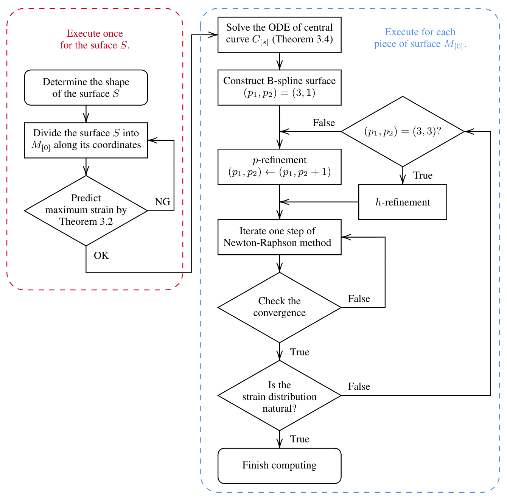
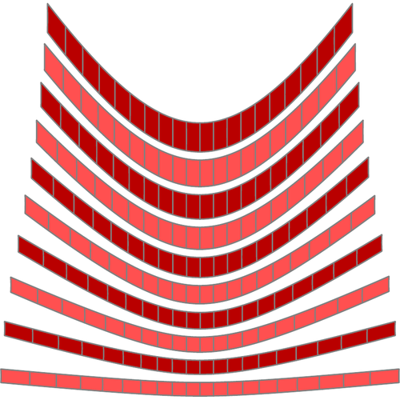
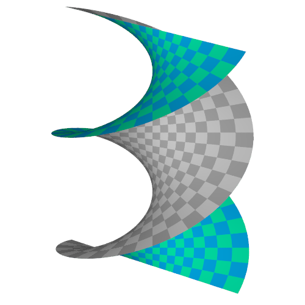

Numerical computation
Installation
On Julia's package mode, run the following commands.
pkg> add IntervalSets
pkg> add StaticArrays
pkg> add BasicBSpline
pkg> add https://github.com/hyrodium/BasicBSplineExporter.jl
pkg> add https://github.com/hyrodium/ElasticSurfaceEmbedding.jlOverview of our method
The computation process proceeds as shown in the following flowchart (from our paper):

Example: Paraboloid
Through this section, we treat a paraboloid $z=x^2+y^2$ as an example.

Load packages, and optional configuration
Load packages with the following script.
using IntervalSets
using BasicBSpline
using StaticArrays
using ElasticSurfaceEmbeddingDefine the shape of surface
ElasticSurfaceEmbedding.𝒑₍₀₎(u¹,u²) = SVector(u¹, u², u¹^2+u²^2)\[\begin{aligned} \bm{p}_{[0]}(u^1, u^2) &= \begin{pmatrix} u^1 \\ u^2 \\ (u^1)^2 + (u^2)^2 \end{pmatrix} \\ D &= [-1,1]\times[-1,1] \end{aligned}\]
In the next step, we will split the surface into elongated strips. The domain of each strip should be rectangular, and the longer direction is u¹, and the shorter direction is u². The paraboloid has four‐fold symmetry, so we don't have to take care of it.
Split the surface into strips
The domain $D$ will be split into $D_i$.
\[\begin{aligned} D_i &= [-1,1]\times\left[\frac{i-1}{10},\frac{i}{10}\right] & (i=1,\dots,10) \end{aligned}\]

In julia script, just define a domain of the strip with function D(i,n).
n = 10
D(i,n) = (-1.0..1.0, (i-1)/n..i/n)D (generic function with 1 method)Check the strain prediction
Before computing the embedding numerically, we can predict the strain with Strain Approximation Formula:
\[\begin{aligned} E_{11}^{\langle 0\rangle}&\approx\frac{1}{2}K_{[0]}B^2\left(r^2-\frac{1}{3}\right) \end{aligned}\]
ElasticSurfaceEmbedding.show_strain — Functionshow_strain(D; index=0)Show the predicted maximum strain and, if possible, also the computed strain with the given index.
for i in 1:n
show_strain(D(i,n))
endPositive number means tension, and negative number means compression. Empirically, it is better if the absolute value of strain is smaller than $0.01 (=1\%)$.
Initial state
If you finished checking the strain prediction, the next step is determination of the initial state.
ElasticSurfaceEmbedding.initial_state — Functioninitial_state(D; n₁ = 15)Compute the initial state, by solving a ODE of center curve.
ElasticSurfaceEmbedding.initial_state! — Functioninitial_state!(allsteps, D; n₁ = 15)Compute the initial state, by solving a ODE of center curve.
From this section, the computing is done for each piece of the surface. First, let's calculate for $i=1$.
i = 11As a first step, let's compute the initial state.
allsteps = initial_state(D(i,n), n₁=19)Newton-Raphson method iteration
newton_onestep!(allsteps, fixingmethod=:fix3points)
newton_onestep!(allsteps)You can choose the fixing method from below:
:default(default):fix3points
ElasticSurfaceEmbedding.newton_onestep! — Functionnewton_onestep(allsteps; fixingmethod=:default, parent::Int=0)Compute one step of Newton-Raphson method
Refinement of B-spline manifold
ElasticSurfaceEmbedding.refinement! — Functionrefinement!(allsteps; p₊::Tuple{Int,Int}=(0, 0), k₊::Tuple{AbstractKnotVector,AbstractKnotVector}=(EmptyKnotVector(),EmptyKnotVector()), parent::Int=0)Compute a refinement of the B-spline manifold
refinement!(allsteps, p₊=(0,1),k₊=(EmptyKnotVector(),KnotVector([(i-1/2)/10])))The knotvector to be inserted in refinement! can be suggested by show_knotvector function.
ElasticSurfaceEmbedding.show_knotvector — Functionshow_knotvector(; index=0)Show current knotvector and suggestions for knot insertions (with given index).
Pin the state
If you finished computing for the strip, it's time to pin the state. This pin📌 will be used for the next final step.
ElasticSurfaceEmbedding.pin — Functionpin(allsteps; parent::Int = 0)Add a pin 📌 for the given index
pin(allsteps, result)If you add a pin mistakenly, you can remove the pin with remove_pin function.
unpin(result, 10)ElasticSurfaceEmbedding.unpin — Functionunpin(allsteps; index::Integer)Remeve the pin 📌 with the given index
Export all pinned shapes
This is the final step of the computational process.
ElasticSurfaceEmbedding.export_pinned_steps — Functionexport_pinned_steps(; unitlength = (10, "mm"), cutout = (0.1, 5), mesh::Int = 60)Export all pinned states for final output
This will create SVG files in ~/ElasticSurfaceEmbedding-Result/Paraboloid/pinned/.
You can edit these files, and craft them into curved surface shape.

Utilities
If you want to resume the computation, you can just call settings like this:
settings("Paraboloid")Other examples
Catenoid

## Load packages
using IntervalSets
using BasicBSpline
using StaticArrays
using ElasticSurfaceEmbedding
## Set parametric mapping (x-direction)
ElasticSurfaceEmbedding.𝒑₍₀₎(u¹,u²) = SVector(cos(u²)*cosh(u¹),sin(u²)*cosh(u¹),u¹)
n=9
Dx(n) = (-π/2..π/2,-π/(4n)..π/(4n))
## Check the maximum strain
show_strain(Dx(n))
## Numerical computing
initial_state(Dx(n), n₁=19)
newton_onestep(fixingmethod=:fix3points)
newton_onestep()
newton_onestep()
refinement!(p₊=(0,1),k₊=(EmptyKnotVector(),KnotVector(0)))
newton_onestep()
newton_onestep()
newton_onestep()
add_pin(tag="$name")
export_pinned_steps(unitlength=(30,"mm"))
## Set parametric mapping (y-direction)
ElasticSurfaceEmbedding.𝒑₍₀₎(u¹,u²) = SVector(cos(u¹)*cosh(u²),sin(u¹)*cosh(u²),u²)
n=9
Dy(i,n) = (-π..π,(i-1)*π/(2n)..(i)*π/(2n))
## Check the maximum strain
for i in 1:9
show_strain(Dy(i,n))
end
## Numerical computing
for i in 1:9
initial_state(Dy(i,n), n₁=19)
newton_onestep(fixingmethod=:fix3points)
newton_onestep()
newton_onestep()
refinement!(p₊=(0,1),k₊=(EmptyKnotVector(),KnotVector((i-1/2)*π/(2n))))
newton_onestep()
newton_onestep()
newton_onestep()
add_pin(tag="$name-$i")
end
export_pinned_steps(unitlength=(30,"mm"))Helicoid

## Load packages
using IntervalSets
using BasicBSpline
using StaticArrays
using ElasticSurfaceEmbedding
## Set parametric mapping (x-direction)
ElasticSurfaceEmbedding.𝒑₍₀₎(u¹,u²) = SVector(cos(u²)*sinh(u¹),sin(u²)*sinh(u¹),u²)
n=9
Dx(n) = (-π/2..π/2,-π/(4n)..π/(4n))
name = "Helicoid-x"
settings(name,canvas=(8,8),mesh=(18,1),unit=200,colorbarsize=0.3)
## Check the maximum strain
show_strain(Dx(n))
## Numerical computing
initial_state(Dx(n), n₁=19)
newton_onestep(fixingmethod=:fix3points)
newton_onestep()
newton_onestep()
refinement!(p₊=(0,1),k₊=(EmptyKnotVector(),KnotVector(0)))
newton_onestep()
newton_onestep()
newton_onestep()
add_pin(tag="$name")
export_pinned_steps(unitlength=(30,"mm"))
## Set parametric mapping (y-direction)
ElasticSurfaceEmbedding.𝒑₍₀₎(u¹,u²) = SVector(cos(u¹)*sinh(u²),sin(u¹)*sinh(u²),u¹)
n=9
Dy(i,n) = (-π..π,(i-1)*π/(2n)..(i)*π/(2n))
name = "Helicoid-y"
settings(name,canvas=(8,8),mesh=(36,1),unit=200,colorbarsize=0.3)
## Check the maximum strain
for i in 1:9
show_strain(Dy(i,n))
end
## Numerical computing
for i in 1:9
initial_state(Dy(i,n), n₁=19)
newton_onestep(fixingmethod=:fix3points)
newton_onestep()
newton_onestep()
refinement!(p₊=(0,1),k₊=(EmptyKnotVector(),KnotVector((i-1/2)*π/(2n))))
newton_onestep()
newton_onestep()
newton_onestep()
add_pin(tag="$name-$i")
end
export_pinned_steps(unitlength=(30,"mm"))